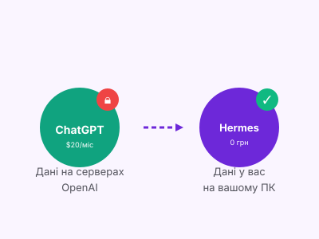
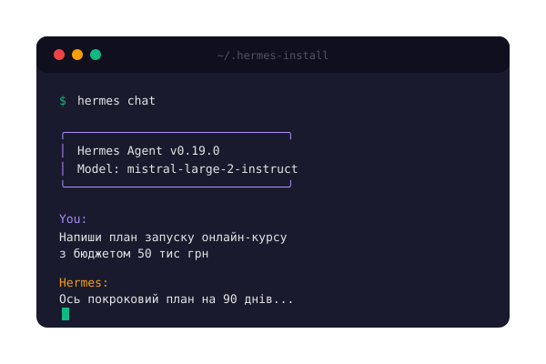
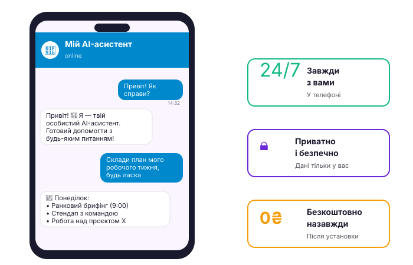

Власний AI-асистент
за 0 грн на місяць
Встановіть за 1 вечір безкоштовного AI-асистента, який не поступається ChatGPT, але працює з вашими даними і не передає їх третім особам.

Що ви отримаєте через 1 вечір
Це не ще одна "AI-підписка". Це ваш власний асистент, який живе на вашому комп'ютері. Ви платите один раз за гайд, а далі — 0 грн назавжди.
-
✓
Живе на вашому ПК
Ніяких чужих серверів. Дані — тільки у вас.
-
✓
Працює 24/7 у Telegram
Пишете боту — він відповідає через AI. З будь-якої точки світу.
-
✓
Топ-моделі безкоштовно
Mistral Large, Llama 70B, Nemotron 253B — ті самі, що в ChatGPT Plus, але за 0 грн.
-
✓
Пам'ятає про вас
Ваші вподобання, стиль, проєкти — асистент щоразу в курсі.

Що в середині гайду
49-сторінковий PDF + бандл файлів для миттєвого старту
Вступ: навіщо вам особистий AI
Чим це відрізняється від ChatGPT, для кого підходить, реальні кейси.
Безкоштовні моделі через Nvidia NIM
Реєстрація за 3 хвилини, отримання API-ключа, вибір моделі під задачу.
Установка Hermes Agent
Запуск setup.sh, підключення NIM, перший діалог українською. З ілюстраціями.
Telegram-бот 24/7
BotFather, токени, Python-код, systemd для автозапуску.
Як асистент працює "під капотом"
Що таке LLM, токени, temperature, пам'ять, skills. Простою мовою.
50 готових промптів
Для роботи з текстом, навчання, побуту, бізнесу, програмування.
Усунення проблем + Бонус
FAQ з 20 найчастіших питань. Локальні моделі (повний офлайн).
+ Бандл файлів (окремими файлами):
Telegram-бот, який працює 24/7
Один раз налаштували — користуєтесь завжди, з будь-якого пристрою

У телефоні, планшеті, ноуті — бот працює скрізь, де є Telegram
Nvidia NIM відповідає швидше, ніж ви встигнете переключитись
У Польщі, Німеччині, Іспанії — єдиний асистент, який завжди з вами
Як це працює
Від покупки до першого діалогу — 30 хвилин
Оплачуєте гайд
Через Monobank банку. Миттєвий доступ до всіх файлів.
Реєструєтесь у Nvidia NIM
Безкоштовно. Покроково в гайді з ілюстраціями.
Запускаєте setup.sh
1 команда в терміналі — все встановлюється автоматично.
Перший діалог українською
Питаєте асистента про щось — отримуєте відповідь. Готово!
Підключаєте Telegram
Бот запущено. Асистент 24/7 у вашому телефоні.
ChatGPT Plus vs Ваш асистент
Чесне порівняння — без перебільшень
| ChatGPT Plus | Ваш асистент | |
|---|---|---|
| Ціна | $20/міс (~830 грн) | 0 грн назавжди |
| Приватність | Дані на серверах OpenAI | Дані тільки у вас |
| Якість моделі | GPT-4 (закритий) | Llama 70B, Mistral Large (відкриті) |
| Українська | Добра | Добра |
| Пам'ять | Обмежена | Повна, ваші файли |
| Telegram-бот | Тільки через офіційний бот | Ваш власний, 24/7 |
| Інтернет | Потрібен завжди | Потрібен (але є офлайн-режим) |
| Кастомізація | Складно (Custom GPTs) | Просто (правите .md файли) |
⚠️ Чесно: ChatGPT трохи кращий у деяких нішах (складний код, наукові задачі). Але для 90% щоденних задач різниці майже немає.
Відгуки перших покупців
Запускаємо разом із продажами — залиште свій відгук першим!
"Тут будуть реальні відгуки. Поки що — це ваша можливість стати першим."
Власний AI-асистент за 0 грн
49-сторінковий PDF + повний бандл + 90 днів підтримки
≈ 1 місяць ChatGPT Plus = безкоштовний асистент назавжди
- ✓ PDF-гайд 49 сторінок українською
- ✓ setup.sh — автоматична установка
- ✓ 50 готових промптів для щоденних задач
- ✓ Telegram-бот (Python-код + systemd)
- ✓ Шпаргалка на 1 сторінці
- ✓ Доступ до Telegram-спільноти покупців (90 днів)
- ✓ Оновлення гайду безкоштовно
💳 Оплата через Monobank або банківською картою.
Після оплати напишіть нам — надішлемо гайд протягом 1 години.
Не сподобалось — повернемо гроші без зайвих питань
Часті питання
Чи потрібен потужний комп'ютер?
Ні. 4 GB RAM і 2 GB диска — це мінімум. Працює навіть на старих ноутбуках 2015 року. Якщо у вас 8+ GB — буде зовсім комфортно.
Чи дійсно 0 грн назавжди?
Так, після одноразової покупки гайду ви платите 0 грн/міс. Nvidia NIM має безкоштовний тариф: 5000 токенів/хв і 10000 запитів/день — цього вистачає на 100-200 діалогів на день. Якщо колись знадобиться більше — є платний план ($0.0009 за 1k токенів, у 5 разів дешевше за OpenAI).
Чи вміє асистент українською?
Так. Mistral Large спеціально тренували на багатьох мовах, включно з українською. Якість порівнянна з GPT-4 для більшості задач: тексти, пояснення, планування, код.
А якщо щось не працює?
У гайді є розділ Troubleshooting з 20 найчастішими проблемами і рішеннями. Плюс 90 днів підтримки в Telegram-спільноті покупців — питайте, допоможемо.
Чи можна повернути гроші?
Так, протягом 14 днів після покупки — без зайвих питань. Пишіть у підтримку.
Чи можна перепродавати гайд?
Ні. Ліцензія тільки для особистого використання. Партнерська програма з комісією 30% — окремо, зв'яжіться з нами.
А якщо я новачок і не знаю що таке "термінал"?
У гайді є детальна інструкція для новачків: як відкрити термінал на Windows/Mac/Linux, як вставити команду, як читати вивід. З ілюстраціями і скріншотами.
Чим це відрізняється від курсу "ChatGPT для початківців"?
Ті курси вчать користуватись чужим сервісом за підписку. Цей гайд — про те, як зробити СВІЙ асистент, без підписки, з повним контролем даних.
Готові почати?
Через 30 хвилин у вас буде особистий AI-асистент, який працює безкоштовно і не залежить від закордонних сервісів.
Або почніть з перегляду змісту — там 49 сторінок конкретних рішень.